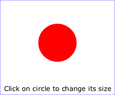
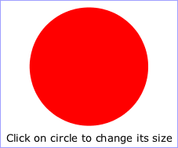

15.1. Introduction
SVG content can be interactive (i.e., responsive to user-initiated events) by utilizing the following features in the SVG language:
- User-initiated actions such as button presses on the pointing device (e.g., a mouse) can cause animations or scripts to execute.
- The user can initiate hyperlinks to new Web pages (see Links out of SVG content: the ‘a’ element) by actions such as mouse clicks when the pointing device is positioned over particular graphics elements.
This chapter describes scripting and DOM event handling in interactive SVG, including under which circumstances events are triggered.
Related information can be found in other chapters:
- hyperlinks are discussed in Links
- animation is discussed in Animating SVG Documents
15.2. Supported events
| SVG 2 Requirement: | Support anchor change events. |
|---|---|
| Resolution: | SVG 2 will consider adding HTML document wide events (including hashchange) apply to SVG documents where they make sense. |
| Purpose: | To allow authors to use the same set of event listener attributes on a root SVG element that they can on an HTML body or root element. |
| Owner: | Cameron (ACTION-3278) |
| SVG 2 Requirement: | Have event listener attributes on an appropriate interface. |
|---|---|
| Resolution: | SVG 2 will move all events listener attributes to Element, in accordance with the similar move in HTML. |
| Purpose: | To align with HTML. |
| Owner: | Cameron (ACTION-3283) |
| SVG 2 Requirement: | Introduce evt as an alias to event in event handlers. |
|---|---|
| Resolution: | We decide to resolve ISSUE-2176 by introducing evt as an alias to event in event handlers. |
| Purpose: | To align with HTML. |
| Owner: | Cameron (ACTION-3093) |
| SVG 2 Requirement: | Support drag & drop functionality. |
|---|---|
| Resolution: | SVG 2 may require drag & drop functionality, and we’ll investigate HTML5’s functionality for that. |
| Purpose: | To allow easier drag & drop in SVG, and to align with HTML. |
| Owner: | Erik (ACTION-3328) |
The following aspects of SVG are affected by events:
- Using SVG Document Object Model (DOM), a script can add or remove DOM event listeners ([DOM]) so that script can be invoked or ignored when a given event occurs on an event target
- SVG’s animation elements can be defined to begin or end based on events.
A number of events defined in SVG 1.1, SVGLoad, SVGError etc, have been replaced with the equivalent unprefixed events defined in UI EVENTS and HTML.
There should be some more modern examples of using events in svg, e.g touch events (w reference to touch events spec). Device orientation events might also be of interest.
The following table lists the events defined by this specification, or that have further requirements or clarifications compared to the specification(s) where they are defined.
The Event name in the first column is the name to use within SVG’s animation elements to define the events which can start or end animations. The UI Event name in the second column is the name to use when defining DOM event listeners ([DOM], section 3.6).
For events not listed in the table, such as events introduced in HTML or UI Events, the respective event type is the name to use within SVG’s animation elements.
Requirements in the table on whether an event of a given type
bubbles or is cancelable apply only to events that are created and
dispatched by the user agent. Events of those types created from script
using the createEvent method on the Document interface can be made to bubble
or be cancelable with the
initEvent
method.
| Event name and description | UI Event name | Event category | Event attribute name |
|---|---|---|---|
|
load
The load event is dispatched only to structurally external elements and to the
Window, when the corresponding external resources have finished loading. Note that
due to it’s relationship with Window
the load event on ‘ The load event and the error event on structurally external elements are mutually exclusive, only one of these events must be dispatched when processing the element in question. load events do not bubble and are not cancelable. In previous SVG specifications the load event was called SVGLoad and could be dispatched immediately after parsing an element but before the related resource(s) were fully loaded. | (same) | none | onload |
|
unload Only applicable to outermost svg elements. The unload event occurs when the DOM implementation removes a document from a window or frame. unload events do not bubble and are not cancelable. | (same) | none | onunload |
|
error The error event occurs when a structurally external element does not load properly or when an error occurs during script execution. error events bubble but are not cancelable. | (same) | none | onerror |
|
beginEvent Occurs when an animation element begins. For details, see the description of Interface TimeEvent in the SMIL Animation specification. | none | none | onbegin |
|
endEvent Occurs when an animation element ends. For details, see the description of Interface TimeEvent in the SMIL Animation specification. | none | none | onend |
|
repeatEvent Occurs when an animation element repeats. It is raised each time the element repeats, after the first iteration. For details, see the description of Interface TimeEvent in the SMIL Animation specification. | none | none | onrepeat |
Details on the parameters passed to event listeners for the event types for UI Events can be found in the ([uievents]) and ([DOM]) specifications. For other event types, the parameters passed to event listeners are described elsewhere in this specification.
Likewise, event-value timing specifiers used in animation element ‘begin’ and ‘end’ attributes are resolved to concrete times only in response to "bubbling" and "at target" phase events dispatched to the relevant element.
15.2.1. Relationship with UI Events
The SVG DOM is compatible with all interfaces defined in, and all the event types from, UI Events, and the event types defined in Clipboard API and events ([uievents], [clipboard-apis]).
All elements in the SVG namespace support
event attributes for these events;
matching IDL properties are included in the base SVGElement interface
via the GlobalEventHandlers mixin.
As part of SVG DOM support, conforming SVG software
must support all (non-deprecated, non-obsolete) event types
defined in these specifications,
if the relevant events could occur in the software’s use.
SVG software that does not support user interaction
should nonetheless implement support for events that can fire without interaction,
such as load and error events.
SVG animation elements (defined in the SVG Animations Level 2 specification) support additional events and event attributes. The following event types are triggered due to state changes in animations.
The event attributes for these animation events have no effect on other elements.
15.3. User interface events
On user agents which support interactivity, it is common for authors to define SVG documents such that they are responsive to user interface events. Among the set of possible user events are pointer events, keyboard events, and document events.
In response to user interface (UI) events, the author might start an animation, perform a hyperlink to another Web page, highlight part of the document (e.g., change the color of the graphics elements which are under the pointer), initiate a "roll-over" (e.g., cause some previously hidden graphics elements to appear near the pointer) or launch a script which communicates with a remote database.
15.4. Pointer events
User interface events that occur because of user actions performed on a pointer device are called pointer events.
Many systems support pointer devices such as a mouse or trackball. On systems which use a mouse, pointer events consist of actions such as mouse movements and mouse clicks. On systems with a different pointer device, the pointing device often emulates the behavior of the mouse by providing a mechanism for equivalent user actions, such as a button to press which is equivalent to a mouse click.
For each pointer event, the SVG user agent determines the target element of a given pointer event. The target element is the topmost graphics element whose relevant graphical content is under the pointer at the time of the event. (See property pointer-events for a description of how to determine whether an element’s relevant graphical content is under the pointer, and thus in which circumstances that graphic element can be the target element for a pointer event.) When an element is not displayed (i.e., when the display property on that element or one of its ancestors has a value of none), that element cannot be the target of pointer events.
If a target element for the pointer event exists, then
the event is dispatched to that element according to the
normal event flow
([uievents], section 3.1).
For shadow trees created by the ‘use’ element or via script,
the event must follow
Dispatching
Events [dom]
If a target element for the pointer event does not exist, then the event is ignored.
15.5. Hit-testing and processing order for user interface events
- hit-testing
- The process of determining whether a pointer intersects a given graphics element. Hit-testing is used in determining which element to dispatch a mouse event to, which might be done in response to the user moving the pointing device, or by changes in the position, shape and other attributes of elements in the document. Hit-testing is also known as hit detection or picking. See also the definition of the pointer-events property.
There are two distinct aspects of pointer-device interaction with an element or area:
- hit-testing, to determine if a pointer event (such as a mouse movement or mouse click) occurred within the interaction area of an element, and the subsequent DOM event flow;
- functional processing of actions associated with any relevant element.
15.5.1. Hit-testing
Determining whether a pointer event results in a positive hit-test depends upon the position of the pointer, the size and shape of the graphics element, and the computed value of the pointer-events property on the element. The definition of the pointer-events property below describes the exact region that is sensitive to pointer events for a given type of graphics element.
Note that the ‘svg’ element is not a graphics element, and in
a Conforming SVG Stand-Alone File
a outermost svg element will never be the target of pointer events,
though events can bubble to this element.
If a pointer event does not result in a positive hit-test on a
graphics element, then it should evoke any user-agent-specific window
behavior, such as a presenting a context menu.
This specification does not define the behavior of pointer events on the outermost svg element for SVG images which are embedded by reference or inclusion within another document, e.g., whether the outermost svg element embedded in an HTML document intercepts mouse click events; future specifications may define this behavior, but for the purpose of this specification, the behavior is implementation-specific.
15.5.2. Event processing
An element which is the target of a user interface event may have particular interaction behaviors, depending upon the type of element and whether it has explicit associated interactions, such as scripted event listeners, CSS pseudo-classes matches, or declarative animations with event-based timing. The algorithm and order for processing user interface events for a given target element, after dispatching the DOM event, is as follows:
- If an event handler registered on this element invokes the
preventDefault()DOM method, then no further processing for this element is performed, and the event follows the event dispatch and DOM event flow processing ([uievents]); - If the element has an associated title or description, such as a ‘
title’ element, and the user agent supports the display of such information (e.g. via a tooltip or status-bar message), that information should be displayed, as appropriate to the type of pointer event; - If the element matches any relevant
dynamic pseudo-class selectors
appropriate to the type of pointer event, such as
:hover,:active, or:focusas described in [CSS2], section 5.11, then the relevant class properties are applied; - If the element and the event type are associated with the activation or cancelation of declarative animation though the use of event-value timing specifiers, any corresponding instance times must be resolved, and any consequential actions of this instance time resolution (such as immediately starting or stopping the animation) must be performed;
- If the element is a hyperlink (e.g., it is a descendant element of an ‘
a’ element), and the pointer event is of a type that activates that hyperlink (e.g. via a mouse click), and if the hyperlink traversal changes the context of the content (e.g. opens a different document, or moves the pointer away from this element by moving to another part of the same document), then no further processing for this element is performed; - If the element is a text content element, and the event type is one which the user agent recognizes as part of a text-selection operation (e.g., a mouse click and drag, or a double-click), then the text selection algorithm is performed;
- If the event type is one which the user agent associates with the evocation of special user-interface controls (e.g., a right-click or command-click evoking a context menu), the user agent should evoke such user-agent-specific behavior, such as presenting a context menu.
15.6. The ‘pointer-events’ property
In different circumstances, authors may want to control under what conditions particular graphic elements can become the target of pointer events. For example, the author might want a given element to receive pointer events only when the pointer is over the stroked perimeter of a given shape. In other cases, the author might want a given element to ignore pointer events under all circumstances so that graphical elements underneath the given element will become the target of pointer events.
The effects of masking and clipping differ with respect to pointer events. A clip path is a geometric boundary, and a given point is clearly either inside or outside that boundary; thus, pointer events must be captured normally over the rendered areas of a clipped element, but must not be captured over the clipped areas, as described in the definition of clipping paths. By contrast, a mask is not a binary transition, but a pixel operation, and different behavior for fully transparent and almost-but-not-fully-transparent may be confusingly arbitrary; as a consequence, for elements with a mask applied, pointer events must still be captured even in areas where the mask goes to zero opacity. If an author wishes to achieve an effect where the transparent parts of a mask allow pointer events to pass to an element below, a combination of masking and clipping may be used.
The filter property has no effect on pointer events processing, and must in this context be treated as if the filter wasn’t specified.
For example, suppose a circle with a stroke of red (i.e., the outline is solid red) and a fill of none (i.e., the interior is not painted) is rendered directly on top of a rectangle with a fill of blue. The author might want the circle to be the target of pointer events only when the pointer is over the perimeter of the circle. When the pointer is over the interior of the circle, the author might want the underlying rectangle to be the target element of pointer events.
The pointer-events property specifies under what circumstances a given element can be the target element for a pointer event. It affects the circumstances under which the following are processed:
- user interface events such as mouse clicks
- dynamic pseudo-classes (i.e., :hover, :active and :focus; [CSS2], section 5.11)
- hyperlinks (see Links out of SVG content: the ‘a’ element)
| Name: | pointer-events |
|---|---|
| Value: | auto | bounding-box | visiblePainted | visibleFill | visibleStroke | visible | painted | fill | stroke | all | none |
| Initial: | auto |
| Applies to: | container elements, graphics elements and ‘use’
|
| Inherited: | yes |
| Percentages: | N/A |
| Media: | visual |
| Computed value: | as specified |
| Animation type: | discrete |
- auto
- The default behavior, which is the same as for visiblePainted.
- bounding-box
- The given element can be a target element for pointer events when the pointer is over the bounding box of the element.
- visiblePainted
- The given element can be the target element for pointer events when the visibility property is set to visible and when the pointer is over a "painted" area. The pointer is over a painted area if it is over the interior (i.e., fill) of the element and the fill property has an actual value other than none or it is over the perimeter (i.e., stroke) of the element and the stroke property is set to a value other than none.
- visibleFill
- The given element can be the target element for pointer events when the visibility property is set to visible and when the pointer is over the interior (i.e., fill) of the element. The value of the fill property does not affect event processing.
- visibleStroke
- The given element can be the target element for pointer events when the visibility property is set to visible and when the pointer is over the perimeter (i.e., stroke) of the element. The value of the stroke property does not affect event processing.
- visible
- The given element can be the target element for pointer events when the visibility property is set to visible and the pointer is over either the interior (i.e., fill) or the perimeter (i.e., stroke) of the element. The values of the fill and stroke do not affect event processing.
- painted
- The given element can be the target element for pointer events when the pointer is over a "painted" area. The pointer is over a painted area if it is over the interior (i.e., fill) of the element and the fill property has an actual value other than none or it is over the perimeter (i.e., stroke) of the element and the stroke property has an actual value other than none. The value of the visibility property does not affect event processing.
- fill
- The given element can be the target element for pointer events when the pointer is over the interior (i.e., fill) of the element. The values of the fill and visibility properties do not affect event processing.
- stroke
- The given element can be the target element for pointer events when the pointer is over the perimeter (i.e., stroke) of the element. The values of the stroke and visibility properties do not affect event processing.
- all
- The given element can be the target element for pointer events whenever the pointer is over either the interior (i.e., fill) or the perimeter (i.e., stroke) of the element. The values of the fill, stroke and visibility properties do not affect event processing.
- none
- The given element does not receive pointer events.
For text elements, hit-testing is performed on a character cell basis:
- The value visiblePainted means that the text string can receive events anywhere within the character cell if either the fill property is set to a value other than none or the stroke property is set to a value other than none, with the additional requirement that the visibility property is set to visible.
- The values visibleFill, visibleStroke and visible are equivalent and indicate that the text string can receive events anywhere within the character cell if the visibility property is set to visible. The values of the fill and stroke properties do not affect event processing.
- The value painted means that the text string can receive events anywhere within the character cell if either the fill property is set to a value other than none or the stroke property is set to a value other than none. The value of the visibility property does not affect event processing.
- The values fill, stroke and all are equivalent and indicate that the text string can receive events anywhere within the character cell. The values of the fill, stroke and visibility properties do not affect event processing.
- The value none indicates that the given text does not receive pointer events.
For raster images, hit-testing is performed on a whole-image basis (i.e., the rectangular area for the image is the determinant for whether the image receives the event):
- The value visiblePainted means that the raster image can receive events anywhere within the bounds of the image, with the additional requirement that the visibility property is set to visible.
- The values visibleFill, visibleStroke and visible are equivalent and indicate that the image can receive events anywhere within the rectangular area for the image if the visibility property is set to visible.
- The value painted means that the raster image can receive events anywhere within the bounds of the image. The value of the visibility property does not affect event processing.
- The values fill, stroke and all are equivalent and indicate that the image can receive events anywhere within the rectangular area for the image. The value of the visibility property does not affect event processing.
- The value none indicates that the image does not receive pointer events.
For ‘foreignObject’ elements, hit-testing is performed on the rectangular
area, the object bounding box, of the element. See processing for raster
images above. Useragents may allow the foreign content of a ‘foreignObject’
element to be target of hit-testing as well.
The values of properties opacity, fill-opacity, stroke-opacity, fill and stroke do not affect event processing.
15.7. Focus
SVG uses the same focus model as HTML, modified for SVG as described in this section. At most one element in each document is focused at a time; if the document as a whole has system focus, this element becomes the target of all keyboard events.
When an element is focused,
the element matches the CSS :focus pseudo-class.
Interactive user agents must visually indicate focus (usually with an outline)
when the focus changes because of a user input event
from the keyboard or other non-pointing device
and may indicate focus at all times.
Authors may use the :focus pseudo-class to
replace the visual indication with one more suitable to the graphic,
(such as a stroke on a shape)
but should not use it to remove visual indications of focus completely.
The following SVG elements are focusable in an interactive document. Any instance of such an element in a use-element shadow tree is also focusable. For the purpose of the HTML focus model, interactive user agents must treat them as focusable areas whose tabindex focus flag should be set:
- the document root element
- any element (such as within a ‘
foreignObject’) that generates a scrollable region - any directly rendered element
with a valid integer ‘
tabindex’ attribute
In the case of user-agent supplied controls, the element may have more than one focusable area, for each sub-control.
In addition, all ‘a’ elements that are valid links are focusable,
and their tabindex focus flag must be set
unless the user agent normally provides an alternative method
of keyboard traversal of links.
For compatibility with content that used the SVG Tiny 1.2 focusable attribute, user agents should treat an element with a value of true for that attribute as focusable. In new content, authors should either omit the focusable attribute or use it only in combination with a corresponding tabindex value of 0.
User agents may treat other elements as focusable,
particularly if keyboard interaction is the only or primary means of user input.
In particular, user agents may support using keyboard focus
to reveal ‘title’ element text as tooltips,
and may allow focus to reach elements which have been assigned
listeners for mouse, pointer, or focus events.
Authors should not rely on this behavior;
all interactive elements should directly support keyboard interaction.
The sequential focus order is generated from the set of all focusable elements,
processing ‘tabindex’ attributes on SVG elements
in the same way as tabindex attributes on HTML elements.
Content within a use-element shadow tree
is inserted in the focus order as if it was child content
of the ‘use’ element.
tabindex’ attribute,
If a script programmatically assigns focus to a non-rendered
or otherwise un-focusable element, the focusing call is aborted.
Note, however, that an element that is not visible or onscreen
may still be rendered.
When the user agent supports scrolling or panning of the SVG document, and focus moves to an element that is currently outside the SVG viewport, the user agent should scroll or pan the document until the focused element is within the SVG viewport.
As in HTML, an SVG element that is focusable but does not have a defined activation behavior has an activation behaviour that does nothing (unless a script specifically responds to it).
This means that an element that is only focusable
because of its ‘tabindex’ attribute
will fire a click event
in response to a non-mouse activation
(e.g. hitting the "enter" key while the element has focus).
For documents that contain a mix of inline HTML and SVG, focus is handled for the document as a whole (with a combined sequential focus order), not with each inline SVG or HTML fragment as an isolated subdocument.
For example, in the following document, pressing Tab would cycle the focus between elements A, B and C, in that order.
<!DOCTYPE html> <button id="A" tabindex="1">First thing</button> <button id="C" tabindex="2">Third thing</button> <svg width="200" height="200"> <text id="B" tabindex="1" x="100" y="100">Second thing</text> </svg>
Note that SVG elements do not have an equivalent of HTML’s accesskey attribute.
15.8. Event attributes
- event attribute
- An event attribute always has a name that starts with "on" followed by the name of the event for which it is intended. It specifies some script to run when the event of the given type is dispatched to the element on which the attribute is specified.
For every event type that the user agent supports, SVG supports that as an event attribute, following the same requirements as for event handler content attributes [HTML]. The event attributes are available on all SVG elements.
The contents of event attributes are always interpreted as ECMAScript, as if processed with the media type 'application/ecmascript'. [rfc2046][rfc4329]
Event attributes are not animatable.
Implementors may view the setting of event attributes as the
creation and registration of an EventListener on the
EventTarget. Such event listeners are invoked only for
the "bubbling" and "at target" phases, as if false were specified
for the useCapture argument to addEventListener.
This EventListener behaves in the same manner as any other
which may be registered on the EventTarget.
If the attribute representing the event listener is changed, this may be viewed as the removal of the previously registered EventListener and the registration of a new one. Furthermore, no specification is made as to the order in which event attributes will receive the event with regards to the other EventListeners on the EventTarget.
In ECMAScript, one way to establish an event listener is to
define a function and pass that function to the addEventListener method:
function myAction1(evt) {
// process the event
}
// ... later ...
myElement.addEventListener("click", myAction1, false)
In ECMAScript, the character data content of an event attribute becomes the definition of the ECMAScript function which gets invoked in response to the event. As with all registered ECMAScript event listener functions, this function receives an Event object as a parameter, and the name of the Event object is evt. For example, it is possible to write:
<rect onclick="MyClickHandler(evt)" .../>
which will pass the Event object evt into
function MyClickHandler.
15.8.1. Animation event attributes
Below are the definitions for the animation event attributes. These can be specified on the animation elements.
Attribute definitions:
-
Name Value Initial value Animatable onbegin,onend,onrepeat(see below) (none) no - Specifies some script to execute when "bubbling" or "at target" phase listeners for the corresponding event are fired on the element the attribute is specified on. See supported events table to determine which event each of these event attributes corresponds to. There are no restrictions on the values of this attribute.
15.9. The ‘script’ element
| SVG 2 Requirement: | Consider allowing async/defer on ‘script’.
|
|---|---|
| Resolution: | SVG 2 will allow async/defer on ‘script’. |
| Purpose: | To align with HTML. |
| Owner: | Cameron (ACTION-3280) |
| SVG 2 Requirement: | Incorporate SVG Tiny 1.2 script processing model. |
|---|---|
| Resolution: | SVG 2 will define how inline scriptable content will be processed, in a compatible way to HTML5 |
| Purpose: | To have consistent script running behavior across HTML and SVG. |
| Owner: | Cameron (ACTION-3282) |
A ‘script’ element is equivalent to the ‘script’ element in
HTML and thus is the place for scripts (e.g., ECMAScript). Any functions
defined within any ‘script’ element have a "global" scope across the
entire current document.
The script’s text content is never directly rendered;
the display value for the ‘script’ element
must always be set to none
by the user agent style sheet,
and this declaration must have importance over any other CSS rule or presentation attribute.
Before attempting to execute the ‘script’
element the resolved media type value for ‘type’ must be inspected.
If the SVG user agent does not support the scripting language then the
‘script’ element must not be executed.
This example defines a function
circle_click which is called by the
‘onclick’ event attribute on the ‘circle’ element. The drawing
below on the left is the initial image. The drawing below on the right shows
the result after clicking on the circle.
<?xml version="1.0" standalone="no"?>
<svg width="6cm" height="5cm" viewBox="0 0 600 500"
xmlns="http://www.w3.org/2000/svg">
<desc>Example script01 - invoke an ECMAScript function from an onclick event
</desc>
<!-- ECMAScript to change the radius with each click -->
<script type="application/ecmascript"> <![CDATA[
function circle_click(evt) {
var circle = evt.target;
var currentRadius = circle.getAttribute("r");
if (currentRadius == 100)
circle.setAttribute("r", currentRadius*2);
else
circle.setAttribute("r", currentRadius*0.5);
}
]]> </script>
<!-- Outline the drawing area with a blue line -->
<rect x="1" y="1" width="598" height="498" fill="none" stroke="blue"/>
<!-- Act on each click event -->
<circle onclick="circle_click(evt)" cx="300" cy="225" r="100"
fill="red"/>
<text x="300" y="480"
font-family="Verdana" font-size="35" text-anchor="middle">
Click on circle to change its size
</text>
</svg>
  |

script’- Categories:
- Never-rendered element, structurally external element
- Content model:
- Character data.
- Attributes:
- DOM Interfaces:
Attribute definitions:
-
Name Value Initial value Animatable crossorigin[ anonymous | use-credentials ]? (see HTML definition of attribute) yes -
The crossorigin attribute is a CORS settings attribute, and unless otherwise specified follows the same processing rules as in html [HTML].
-
Name Value Initial value Animatable type(see below) application/ecmascript no -
Identifies the scripting language for the given ‘
script’ element. The value must be a valid media type, per Multipurpose Internet Mail Extensions (MIME) Part Two [rfc2046]. If a ‘type’ is not provided, then the default scripting language assumed is ECMAScript, as if processed with the ‘application/ecmascript’ media type. -
Name Value Initial value Animatable hrefURL [URL] (none) no -
An URL reference to an external
resource containing the script code.
Refer to the common handling defined for URL reference attributes and
deprecated XLink attributes.
The URL is processed and the resource is fetched as described in the Linking chapter.
15.10. DOM interfaces
15.10.1. Interface SVGScriptElement
An SVGScriptElement object represents a ‘script’ element in the DOM.
[Exposed =Window ]interface :SVGScriptElement SVGElement { [Reflect ]attribute DOMString ;type attribute DOMString ?crossOrigin ; };SVGScriptElement includes SVGURIReference ;
The crossOrigincrossorigin’ content attribute.